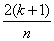

Options for Multiple Logistic Regression: Residuals
Click the Residuals tab in the options dialog box to view the Residual Type, Raw, Standardized, Studentized, Studentized Deleted, and Report Flagged Values Only options.
Residual Type. Residuals are not reported by default. To include residuals in the report select either Pearson or Deviance from the Residual Type drop-down list. Select None from the drop-down list if you don't want to include residuals in the report.
Deviance residuals are used to calculate the likelihood ratio test statistic to assess the overall goodness of fit of the logistic regression equation to the data. The likelihood ratio test statistic is the sum of squared deviance residuals. The deviance residual for each point is a measure of how much that point contributes to the likelihood ratio test statistic. Larger values of the deviance residual indicate a larger difference between the observed and predicted values of the dependent variable.
Pearson residuals are calculated by dividing the raw residual by the standard error. The standard error is defined as the observed value of the dependent variable (0 or 1) divided by the probability of a positive response (for example y = 1) outcome that is estimated from the Logistic Regression equation. Pearson residuals are the default residual type used to calculate the goodness of fit for the logistic regression equation because the Chi-Square goodness of fit statistic is the sum of squared Pearson residuals.
Raw Residuals. The raw residuals are the differences between the predicted and observed values of the dependent variables. To include raw residuals in the report, make sure this check box is selected. Click the selected check box if you do not want to include raw residuals in the worksheet.
To assign the raw residuals to a worksheet column, select the number of the desired column from the corresponding drop-down list. If you select none from the drop-down list and the Raw check box is selected, the values appear in the report but are not assigned to the worksheet.
Studentized Residuals. Studentized residuals take into account the greater precision of the regression estimates near the middle of the data versus the extremes. The Studentized residuals tend to be distributed according to the Student t distribution, so the t distribution can be used to define "large" values of the Studentized residuals. SigmaPlot automatically flags data points with "large" values of the Studentized residuals, for example, outlying data points; the suggested data points flagged lie outside the 95% confidence interval for the regression population.
To include Studentized residuals in the report, make sure this check box is selected. Click the selected check box if you do not want to include Studentized residuals in the worksheet.
Studentized Deleted Residuals. Studentized deleted residuals are similar to the Studentized residual, except that the residual values are obtained by computing the regression equation without using the data point in question.
To include Studentized deleted residuals in the report, make sure this check box is selected. Click the selected check box if you do not want to include Studentized deleted residuals in the worksheet.
SigmaPlot can automatically flag data points with "large" values of the Studentized deleted residual, for example, outlying data points; the suggested data points flagged lie outside the 95% confidence interval for the regression population.
Report Flagged Values Only. To only include the flagged standardized and Studentized deleted residuals in the report, select Report Flagged Values Only. Clear this option to include all standardized and Studentized residuals in the report.
Influence
Influence options automatically detect instances of influential data points. Most influential points are data points which are outliers, that is, they do not "line up" with the rest of the data points. These points can have a potentially disproportionately strong influence on the calculation of the regression line. You can use several influence tests to identify and quantify influential points.
Leverage. Leverage is used to identify the potential influence of a point on the results of the regression equation. Leverage depends only on the value of the independent variable(s). Observations with high leverage tend to be at the extremes of the independent variables, where small changes in the independent variables can have large effects on the predicted values of the dependent variable.
The expected leverage of a data point is  , where there are k independent variables and n data
points. Observations with leverages much higher than the expected leverages are
potentially influential points.
, where there are k independent variables and n data
points. Observations with leverages much higher than the expected leverages are
potentially influential points.
Select Leverage to compute the leverage for each point and automatically flag potentially influential points, for example, those points that could have leverages greater than the specified value times the expected leverage. The suggested value is 2.0 times the expected leverage for the regression . To avoid flagging more potentially influential points, increase this value; to flag points with less potential influence, lower this value.
Cook's Distance. Cook's distance is a measure of how great an effect each point has on the estimates of the parameters in the regression equation. Cook's distance assesses how much the values of the regression coefficients change if a point is deleted from the analysis. Cook's distance depends on both the values of the independent and dependent variables.
Select Cook's Distance to compute this value for all points and flag influential points, for example, those with a Cook's distance greater than the specified value. The suggested value is 4.0. Cook's distances above 1 indicate that a point is possibly influential. Cook's distances exceeding 4 indicate that the point has a major effect on the values of the parameter estimates. To avoid flagging more influential points, increase this value: to flag less influential points, lower this value. For more information, see What to Do About Influential Points.